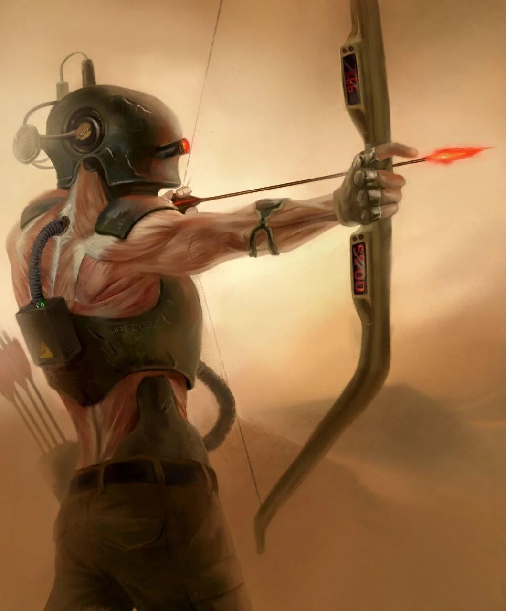
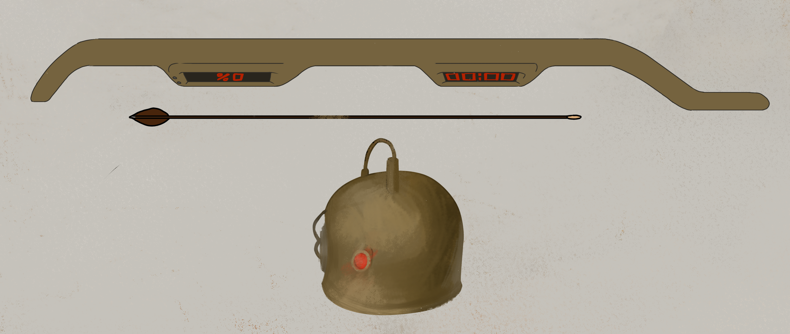

This is another project I was very passionate about. Let’s say, I decided to combine things I like to draw most - body, muscles and the human anatomy, and the anti-war ideas inspired by Megadeth albums I was listening at the moment.
It features a man, the Archer, who has no name, only a soldier's serial number on his armour. Mechanical parts integrated in his flesh make him an excellent soldier, but his muscles are exposed — even air on the battlefield brings him great pain.

The design was inspired by real military pants and the look of the M1 helmet, but I decided I want the helmet hide his whole face(once again erasing his identity) and adding one single sight (like on a rifle) on his right eye, which he uses to aim. I wanted to make the armor look very uncomfortable, with lower panels resembling hip bones of a skeleton, that would hurt more than protect. On the armor on his back, there is a unit that delivers power directly to t he soldier’s spinal cord, making him an effective fighting unit at all times. And, finally, his bow. It is a futuristic weapon that has a charge level indicator and countdown on it. I’d say, this detail was heavily inspired by Megadeth’s ‘Countdown to Extinction.’ I’d create something like that again in a heartbeat, probably on some different topic.
© 2026 Auroscurro. All rights reserved.